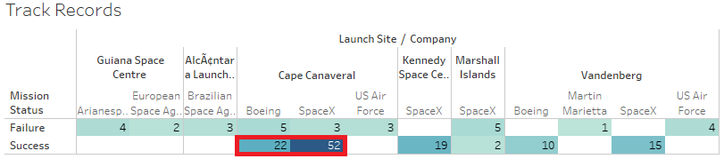

IS-525 Data Warehousing and BI Final Project Report
EDA on Space Missions

INTRODUCTION
The report is organized into two main sections, each of which examines two different datasets from the same domain. In the first section, we attempt to summarize the ideal conditions by examining several metrics such as wind speeds, temperature, and humidity. In the second section, we try to look at the launch statistics for different regions and companies.
AIM
Perform Exploratory Data Analysis to get some interesting insights and also sum up the optimal conditions (at the time of launch) for a space mission, by answering queries such as, ‘What are the average temperature, wind speeds, humidity of the launch sites?’, etc.
TAKING A LOOK AT THE DATASETS
1. Dataset-1
Here are the columns from the first dataset:
As we see above, we have details on the environmental conditions as well as on the type of vehicle and its payload. Every entry has its associated mission status (success/failure) and the failure reason in case the mission wasn’t a success.
2. Dataset-2
For the second dataset, we have fewer columns but more details in terms of country of launch and money spent on the mission.
The data was scraped from https://nextspaceflight.com/launches/past/?page=1 and could be accessed from https://www.kaggle.com/datasets/agirlcoding/all-space-missions-from-1957.
SECTION - 1
Dashboard - 1 (Different Factors in Space Missions)
Taking a look at the above dashboard, we notice that the maximum number of successes were at Cape Canaveral. We also observe that the average temperature for this site was 73.27°F and the average humidity was 75.96%. These values are approximately the median of the average temperature and humidity values respectively among all the different sites.
Similarly, the average windspeeds for most of the sites hover around 8 to 8.5 MPH.
We’re going to take this opportunity to talk about a major challenge that we faced while studying the first dataset. As mentioned above, the maximum number of successes recorded are for the Cape Canaveral site. Upon observing the dataset, we see that the total number of observations are 150, which is indeed low to make any concrete conclusions. A huge portion of the observations are for the SpaceX company. We tried to get more data (rows) to have a better standing on the conclusions, but due to the nature of the dataset (i.e. having numerous columns), it wasn’t a success.
So, for this study, we have taken an additional dataset, where we perform EDA to get interesting insights. The number of rows is close to 4.5K, which can be considered as a healthy amount. Unfortunately, we don’t have all the details here, such as environmental conditions and the payload details; but we do have some additional bits, which include the country of launch and the amount of money spent on the missions. In the next section, we’ll proceed to explore this data.
SECTION - 2
Dashboard - 2 (Overall Mission Statistics)
The first dashboard is centric on general statistics on space missions. We see that the maximum number of launches (from the year 1957) are from RVSN USSR. NASA, one of the most popular companies, happens to stand in the 5th position in this aspect.
81.73% of all the space vehicles have retired.
And 3879 out of 4324 space missions have been a success.
Dashboard - 3 (Details Of Missions By Country)
While the total amount spent on space missions is considerably higher for the USA when compared to that of Russia, we see that there’s very little difference in the total number of launches between the two countries.
Russia has had fewer failures than the USA.
Kazakhstan spends more on an average on a space mission but has a greater number of failures than Russia, when the total number of launches vary by a much (Russia having more) for the two countries.
Russia, The USA, Kazakhstan, China, and France lead by a lot when it comes to the total number of launches.
Dashboard - 4 (Launch Missions By Year & Month)
The decade 1967-1977 and the year 2018 was prominent in terms of having a great number of space launches.
December seems to be the favorite month of the year for the space launches.
Dashboard - 5 (Company Dynamics)
While it has really been a while since companies like RVSN USSR and US Navy have last launched a space station, companies like SpaceX and VKS RF have been more active in the recent years.
Dashboard - 6 (USA vs. Russia Statistics)
As we also saw in Dashboard-3, the total number of launches for the two countries are very close.
From the year 1967-1991, Russia has been more active in terms of launching vehicles/stations. For much of the rest of the years, the USA has been more active.
While the trend for failures has been similar for the two countries for the recent years, in the earlier years, the USA has had a greater number of failures.
Dashboard - 7 (Leaders By Successful Missions)
As mentioned above, 2018 was one of the years that saw a high number of launches. China had the greatest number of successes in that year. There are some really impressive numbers for some countries, a few of which are China, Russia, the USA, and Kazakhstan.
END-NOTE
We were able to take a look at the average of environmental conditions for space mission launches and perform EDA to come across some really intersting findings.